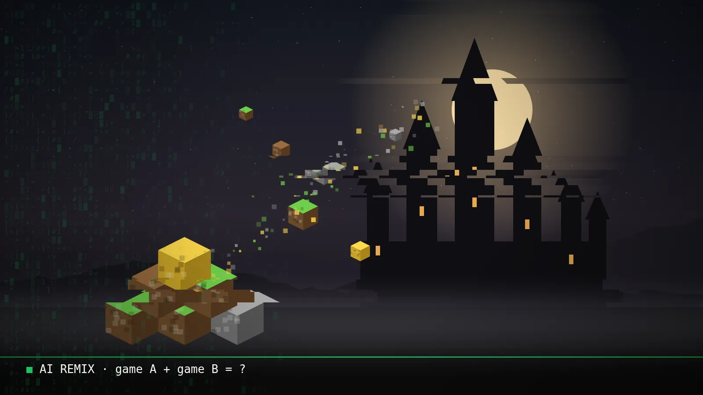

Blog ·
Minecraft v Elden Ringu: AI začala remixovať videohry
Internet zaplavili videá, kde sa jedna hra objaví vnútri druhej. Za väčšinou z nich je AI, ktorá za pár hodín napíše kód, na ktorý by modder kedysi potreboval mesiace. Čo sa vlastne deje a prečo to nie je len zábava?

Od konca septembra je herný internet plný zvláštnych videí. Kocky z Minecraftu v Elden Ringu. Skateboard zo Skate 3 v Call of Duty. Mario Kart v zombie móde. Hry, ktoré spolu nemajú nič spoločné, zrazu bežia jedna v druhej.
Ľudia, ktorí to robia, si hovoria vibecoderi. Neprogramujú riadok po riadku. Povedia AI, čo chcú, a AI napíše kód. Presne tak, ako si ja staviam svoje appky, len oni s tým rozoberajú hry.
Aktualizované 14. októbra 2026: doplnil som, akými tromi spôsobmi sa hry reálne spájajú, a čo si už dnes vieš stiahnuť.
Ako to funguje, po ľudsky
Hra, ktorú si kúpiš, nie je napísaná v čitateľnej podobe. Je to „preložený“ kód, ktorému rozumie počítač, nie človek. Spätne ho rozlúštiť (tomu sa hovorí dekompilácia) bola vždy mravenčia robota na mesiace. Teraz modderi dajú tento kód AI agentovi a ten ho rozoberie za nich. Celú vlnu podľa médií odštartovali nové AI modely, ktoré zvládajú dlhé programátorské úlohy samy.
Keď som sa do toho pozrel bližšie, „hra v hre“ nie je jedna technika. Sú to v podstate tri rôzne spôsoby a každý funguje inak.
1. Obe hry bežia naraz a prelínajú sa
Na počítači sa zapnú dve hry naraz. Každá má malý mod a medzi nimi je „most“, ktorý si každý snímok posiela, kde je kamera, kde je zem a čo sa práve stalo (napríklad výbuch). Obraz jednej hry sa potom vloží do druhej tak, aby veci správne zakrývali jedna druhú. Vyzerá to ako jedna hra, ale v skutočnosti sú to dve, ktoré sa navzájom „počúvajú“.
Takto vznikol napríklad Minecraft v Skyrime (SkyCraft) alebo Minecraft v GTA 5. Volá sa to aj passthrough modding. Háčik: počítač musí utiahnuť dve hry naraz, takže slabšie stroje to nedajú.
2. Z jednej hry sa vyberie kúsok a presadí sa do druhej
Fanúšikovia kedysi kompletne dekompilovali Super Mario 64, takže kód Maria aj s jeho fyzikou je dnes čitateľný. Niekto ho vybral a presadil do Elden Ringu. Elden Ring dodáva zem, steny a ovládanie, Mario si skáče podľa svojich pravidiel. Výsledok beží ako mod vnútri jednej hry, nie ako dve hry vedľa seba.
Tu AI pomáha najviac: rozlúštiť cudzí kód a napísať „lepidlo“, ktoré ho napojí na druhú hru. Vznikol na to aj návod pre AI agentov (Universal Moder), ktorému povieš „spoj Doom a Skyrim“ a agent si sám prečíta súbory oboch hier a napíše prepojenie.
3. Hra sa prepíše od nuly a vloží sa do inej
Najťažšia cesta. Niekto prepíše celý engine alebo jeho časť nanovo, a pôvodné modely a textúry si to berie z tvojej vlastnej kópie hry. Takto vzniklo skateboardovanie zo Skate 3 v Call of Duty: Modern Warfare 2 alebo vo Vice City. Menšia verzia toho istého: jeden nepriateľ alebo mapa sa postaví nanovo cez oficiálne modovacie nástroje druhej hry, napríklad Creepre z Minecraftu v Dark Souls.
Zmena nie je v tom, že AI vie robiť hry. Zmena je v tom, že rozlúštiť cudziu hru už netrvá mesiace, ale hodiny.
Háčik: veľa toho sú stále len videá
Pri najvirálnejších klipoch, vrátane samotného Minecraftu v Elden Ringu, autor nezverejnil kód ani spôsob, ako to spravil. Overiť sa to nedá. Novinári z Kotaku a ďalších webov upozorňujú, že veľa z toho je skôr efektné demo než hrateľná hra. Pár sekúnd, ktoré dobre vyzerajú vo feede, ale nie hodina hrania.
Pár vecí si ale stiahnuť dá: Mario v Elden Ringu, Minecraft v Skyrime a skateboardovanie v MW2 aj vo Vice City sú na GitHube. Vždy však potrebuješ vlastné, legálne kúpené kópie hier, z ktorých si mod berie súbory.
Plus je tu druhá vec. Takéto mashupy berú obrázky, modely a kód z cudzích hier bez povolenia. To je problém s autorskými právami a znepokojuje to aj samotných modderov, lebo im to môže pokaziť vzťahy s hernými štúdiami, ktoré modovanie roky tolerovali. Nexus Mods, najväčší web s modmi, už predtým sprísnil pravidlá pre obsah vytvorený s AI.
Prečo by ťa to malo zaujímať, aj keď nehráš hry
Lebo to isté sa deje všade. Hry sú len najviditeľnejší príklad, lebo videá sú zábavné a šíria sa rýchlo. Ale princíp je rovnaký pre každý softvér:
- Starý systém, ktorému nikto nerozumie? AI ti ho dnes vie rozobrať a vysvetliť, ako funguje.
- Dve appky, ktoré spolu nekomunikujú? Prepojiť ich je čoraz menej práce.
- Nápad, ktorý si odkladal, lebo „na to treba programátora“? Veľa takých vecí si dnes postavíš sám.
A tá druhá strana platí tiež: to, že sa niečo dá spraviť, neznamená, že sa to smie. Cudzí kód a cudzie dáta sú stále cudzie.
Môj pohľad
Môj post na X k tejto téme.
Pozri post na X →
Som ex-gamer a s AI si staviam vlastné nástroje každý deň, takže ma to baví z oboch strán. Zo skúsenosti viem, že od „wow videa“ po vec, ktorá naozaj spoľahlivo funguje, je dlhá cesta. AI ti dá prvých 80 % strašne rýchlo. Zvyšok je stále robota.
Ale tá rýchlosť je skutočná. A ak ju vieš nasmerovať na vlastné veci namiesto cudzích hier, vieš si ušetriť naozaj veľa času.
Chceš si niečo také vyskúšať sám? Na 3-hodinovej session ťa to naučím na tvojich vlastných veciach.
15 min hovor zadarmo